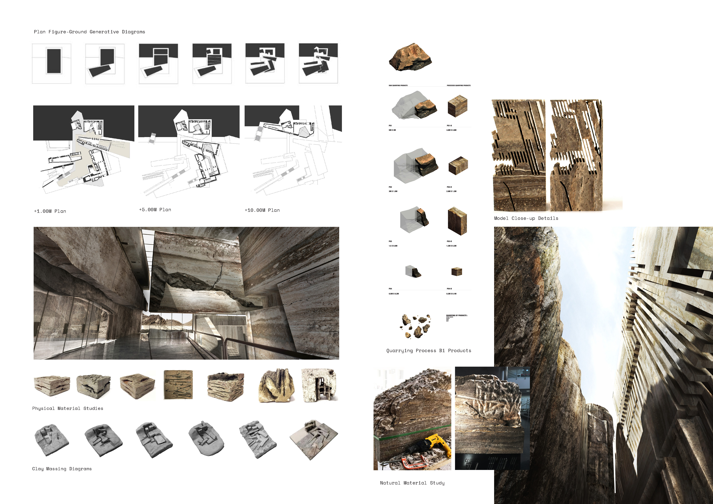
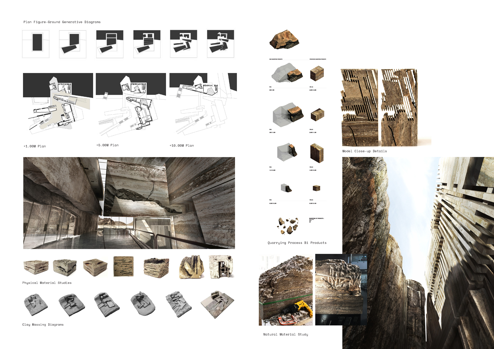

· salient extension ·
College of Architecture, Art & Design,
American University of Sharjah, UAE
Advisor: Professors Michael Hughes & Fernando Menis
Team: Mariam Al Jomayre
Human beings are naturally curious, seeking opportunities to playfully explore and discover while wondering around. Unfortunately, today the structure of the urban environments around the world limits the inherit curiosity to almost complete familiarity and expectedness. This is due to the over inscription of codes creating somewhat of a procedure, a routine that humans regularly and unconsciously adhere to. Thus, human behavior and movement in the city is foreseeable and imposed.
The United Arab Emirates, Dubai in particular, is a city that is growing at a very high speed. This increased our tendency to move through public spaces quickly without engaging with the surroundings much as everything around us is being streamlined and made more effective at high speeds rather than leisurely strolls. The UAE desert, just a few kilometers away from the city is an environment where one could say that it doesn’t abide to any specific way of operation. The desert environment is unfamiliar to city dwellers, there are no inscribed pathways for guidance, the ground plane exhibits a variance in heights, and the environment is characterized by many contrasting material conditions; textures from the soft sand to the rough mountain, smell, touch, scale and color.
Through an active landscape strategy which organizes the proposed art campus into a series of flows connecting interior and exterior with the desert to deepen the cultural relationship to nature and provides passive, sustainable strategies to increase the building’s thermal mass. Our proposal strategically intensifies and re-imagines the live-work programs through layers of landscape and natural light to produce an iconic cultural landmark using the existing site qualities to create a mysterious built environment.
Hence, our proposal “Salient Extension” is an art & design campus that aims to rethink Dubai’s live-work ways of operation, fostering senses of curiosity and encouraging a non-normative way of working, which is achieved through the assembly of on-site materials, connectivity to the landscape, and through rethinking as zoning, procession, and materiality. The project is assembled through an additive-subtractive quarrying process of stone from its context. The products of extraction and leftovers are cataloged and then re-purposed within the project in different scopes, scales, and functions depending on the programmatic and structural needs of every space. While the spaces adhere to the limits of stone in creating structure, yet it pushes it limits through advanced robotic stone fabrication.
 
